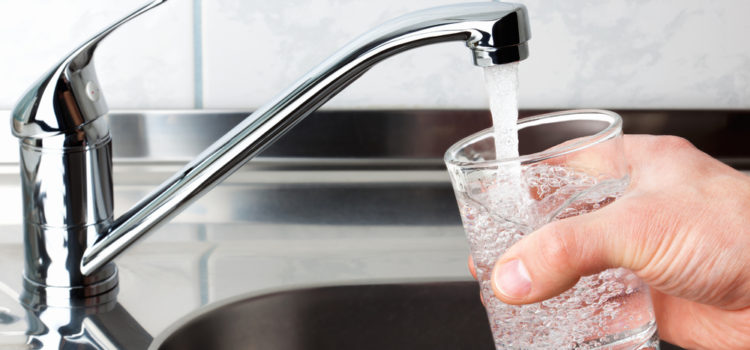

Have you tested your water for lead?
New Yorkers must usually depend on government agencies to prevent lead exposure: building inspections to test soil and paint, regulations to keep lead-based products off retailers’ shelves. But as recent investigations by Reuters and the New York Department of Investigation found massive holes in the city’s lead abatement procedures, New Yorkers should also know about a free program that sends a lead testing kit to any household that requests one through 311.
In the last five years, 4046 Brooklyn households requested such a kit, and, in total, an average of 0.97 percent of Brooklynites participated. This indicates that the city has a long way to go before eliminating the risk of lead contamination. The high numbers in certain industrial neighborhoods, such as East New York, Sunset Park, and Red Hook is also, perhaps, a hopeful sign that New Yorkers know about this free program and are becoming increasingly aware of how to reduce their risks of exposure.
About the Data: Lead kit request data was pulled from NYC Open Data's 311 Service Requests data. The Lead Kit Requests dataset was made available through the Department of Environmental Protection (DEP). The above percentages were arrived at by comparing the number of requests made in each zip code to the number of housing units in each zip code, as provided by the American Community Survey. Any errors in calculation are solely the author's.
Download the author's final dataset here.